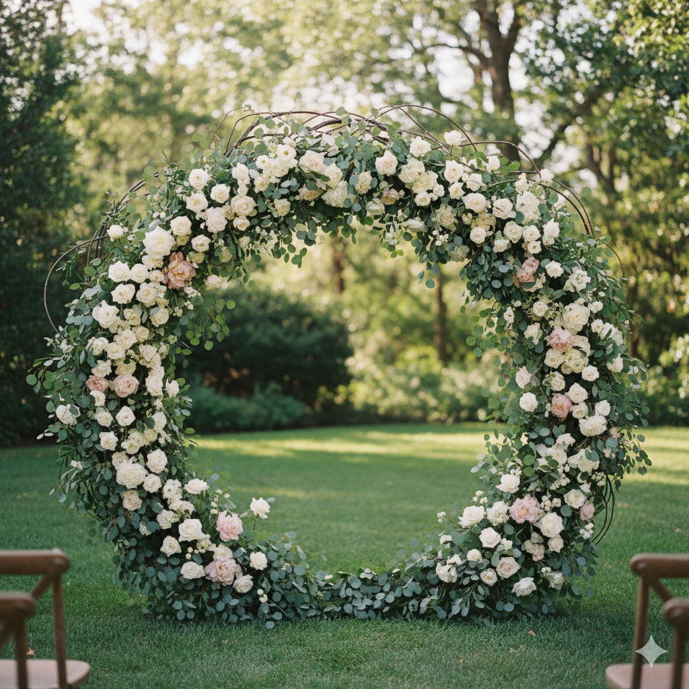
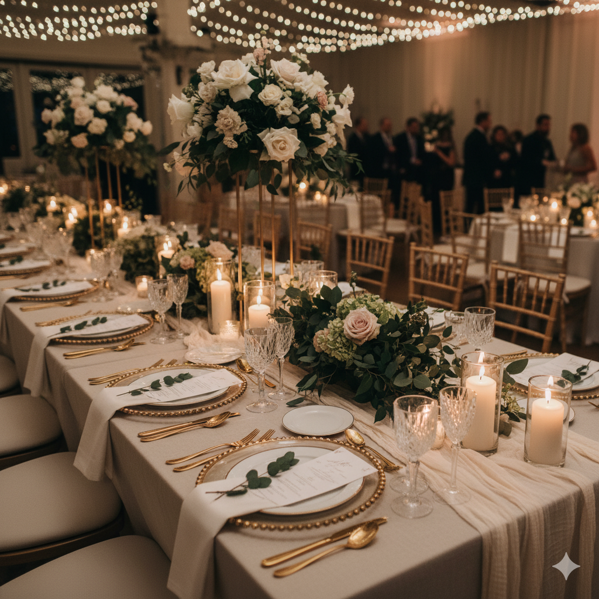
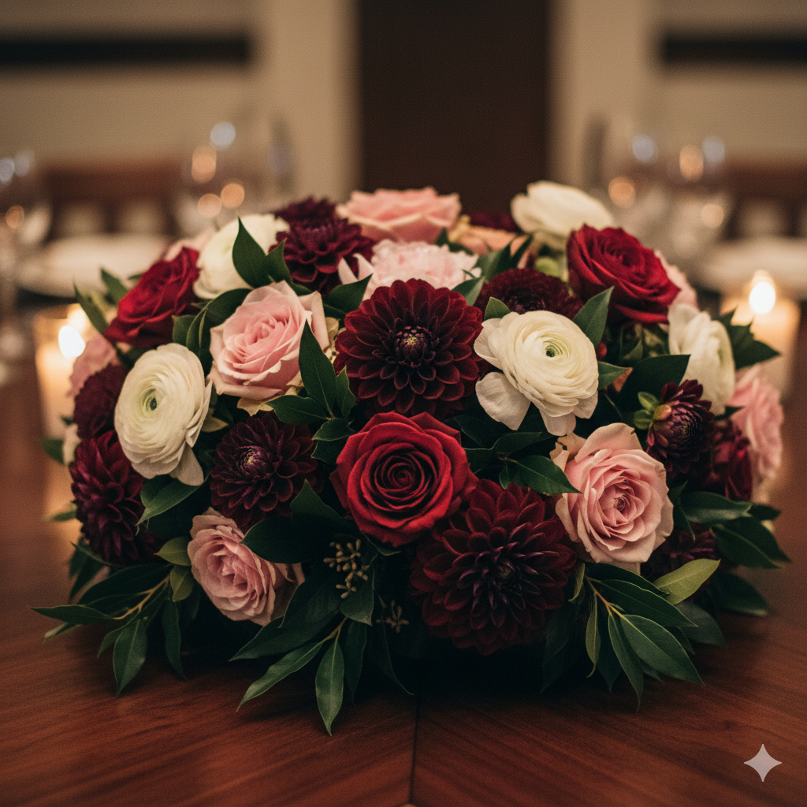

Decoração
Flor & Arte Decorações
Piracicaba, SP
Sobre a Empresa
A Flor & Arte é especializada em criar cenários de casamento que contam histórias. Acreditamos que a decoração é a alma do evento, transformando espaços em ambientes mágicos e acolhedores. Com um olhar atento aos detalhes, nossa equipa de floristas e designers trabalha para traduzir a personalidade dos noivos em cada arranjo, cor e textura.
Desde casamentos clássicos e românticos até celebrações modernas e minimalistas, desenvolvemos projetos de decoração floral e cenografia completos, incluindo o design do altar, centros de mesa, lounges e a mesa de doces.
Galeria de Fotos


